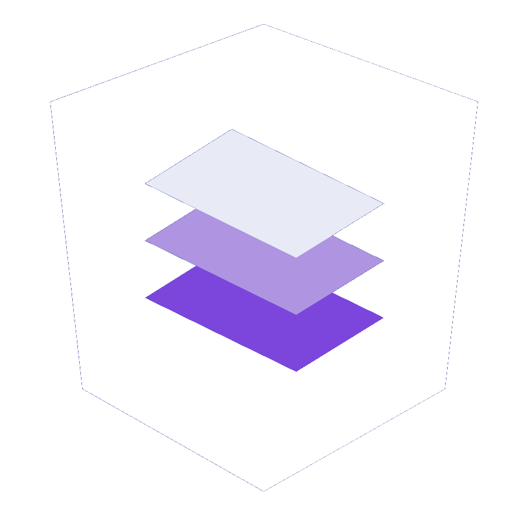

<mat-toolbar color="primary">
  <!-- Nome ou logo da aplicação -->
  

  <!-- Links de navegação -->
  <span class="spacer"></span> <!-- Garante que os itens de menu fiquem à direita -->

  <button mat-button [routerLink]="['/']" [routerLinkActive]="['is-active']">Home</button>
  <button mat-button [routerLink]="['/sobre']" [routerLinkActive]="['is-active']">Sobre</button>
  <button mat-button [routerLink]="['/cadastro']" [routerLinkActive]="['is-active']">Cadastro</button>

</mat-toolbar>

<section>
  <main class="container">
    <router-outlet/>
  </main>
</section>
